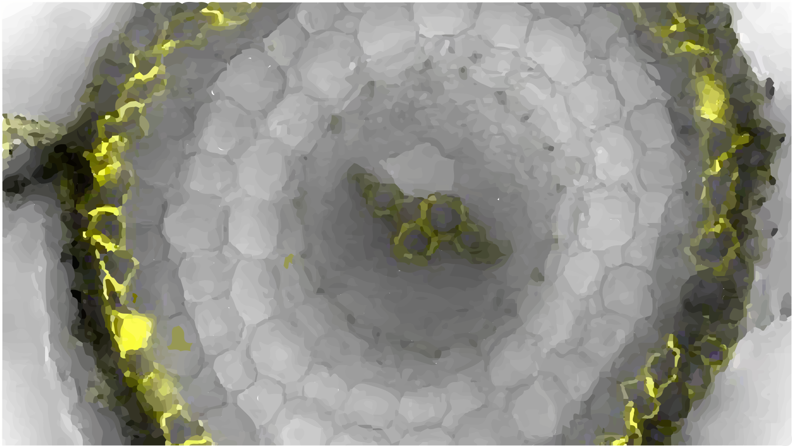

Welocome to the 2024 exhibition
Click on any poster to view or download the full version.

Plants from the future
Research on plant adaptation under future climate scenarios.

Walls against drought
How plants regulate water loss under extreme drought stress.

Underwater
Mechanisms of plant survival in flooded environments.

Friends and foes
Interaction between plants and microbes in soil ecosystems.